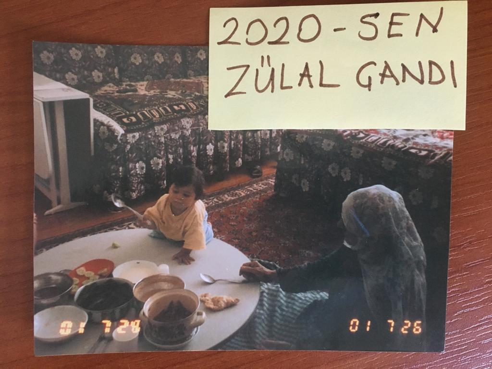
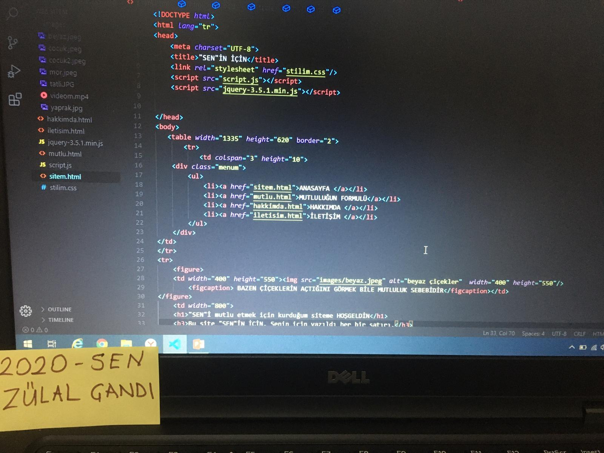
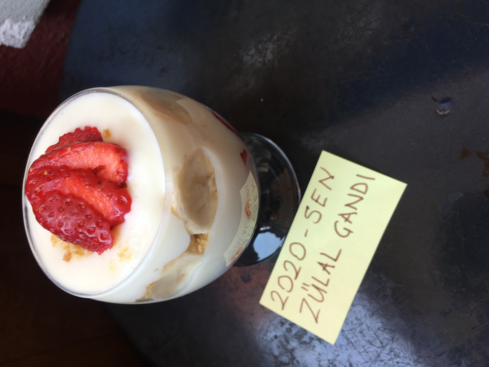
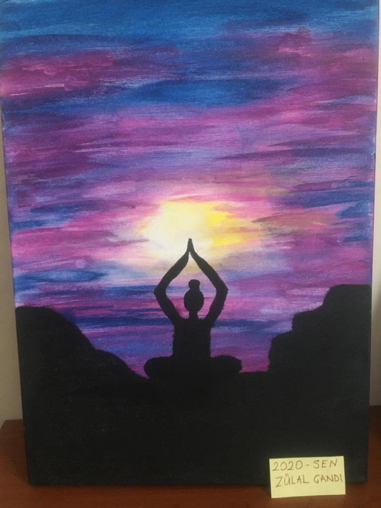

SEVDİĞİN YEMEK İÇİN MÜCADELE ETMEK DE MUTLULUKTUR. |
MUTLULUĞUN FORMULÜİnsan küçük şeylerden mutlu olmalı. Bazen yolda gördüğü bir çiçek, bazen gördüğü bir kuş, bazense aldığı bir nefes bile mutlu etmeli. Bir çocuğun gülümsemesi, bir kedinin miyavlaması mutlu etmeli. Arkadaşlarla edilen sohbetler, aileyle içilen akşam çayları mutlu etmeli.Eski bir fotoğraf,anılar mutlu etmeli. Yeni şeyler öğrenmek, bildiklerini paylaşmak mutlu etmeli ve bunun gibi daha bir sürü sayabileceğim şeyler mutlu etmeli.İnsan elindekilerden mutlu olmalı ama sağlığımızın kıymetini sağlığımız elimizden gidince, yediğimiz yemeğin güzelliğini o yemeği bi daha yiyemeyince anlıyoruz. " Mutluluk bir armağandır ve işin sırrı onu beklemekte değil, geldiğinde memnun olmaktadır." demiş Charles Dickens. Mutluluğu beklersen,mutluluğu ararsan mutsuz olarak ölürsün. Mutluluk beklenildiğinde değil habersiz geldiğinde güzeldir.O yüzden bekleme,arama,akşına bırak biraz da. Böyle çok daha mutlu olacaksın. |
||
Yukarıda nasıl mutlu olacağından biraz bahsettim. Gel hadi şimdi de senin için hazırladığım mutluluk formullerine bakalım.Bunlardan ilki "Yeni Şeyler Öğrenmek"Yeni şeyler keşfetmek, öğrenmek insana mutluluk getirir. Öğrendikçe özgüveniniz yerine gelir.Başardıkça daha çok çalışma,öğrenme isteği gelir. Hayatta başarılı olanlar, kendilerine gereken bilgileri öğrenmekten bir an geri kalmazlar ve olayların sebeplerini her zaman araştırırlar.Bu da onları bir adım önde tutar, mutlu eder Bunlar da seni kendi içinde çok daha değerli hissettir. |
 | ||
Hadi diğer formulümüze geçelim"Yemek Yapmak"Yemek yapmak hem stres atmanı sağlar hem de mutlu eder. Hele bir de tatlı yapıyorsan çok daha eğlenceli olur. Tencerelerin dibini sıyırmak en iyi terapi olabilir bence. Mesela birine sinirlendiniz ve sürekli bu olayı mı düşünüyorsunuz? Hemen bir yemek yapın. Sinirinizi soğanlardan, fasulyelerden çıkarabilirsiniz. Bu da çok iyi bir terapidir ve mutluluk verir. |
 | ||
|  |
Bir diğer formulümüz de "Resim Çizmek"Resim çizmek de insanı mutlu eden, motive eden olaylardan biri.Sıkıntılı, hüzünlü anlarda ya da mutlu anlarda kelimelerin çizgilere döküldüğü oradan da şekillenip dile geldiği bir sanat. İçerisinde birsürü duygu ve düşünceyi taşıyabilen, her bakanın farklı yorumlayabileceği, her yorumla daha da güzelleşen bir sanat. Mesela karakalem çalışmaları karanlık şeylerin her zaman kötü olmayacağını, güzel şeylere dönüşebileceğini, meselenin karasına değil de kalemine bakmamız gerektiğini düşündürür bana. Resim yeteneğim yok ben ne yapayım diye düşünüyorsan da sakın üzülme. Sonuçta herkesin farklı becerileri vardır.Zaten ben sana bir Picasso tablosu yap demiyorum. Bunu yaparken eğlen, mutlu ol diyorum. Bir çizik bile çizemesen de mutlu olmak için adım atarsan mutlu olursun Son bir söz daha söylersem Nazım Hikmet'in çok Güzel bir sözü var. "Mutlu olmak için büyük nedenlere gerek yok.Cebimde 75 kuruşum var hava da bahar." |
||